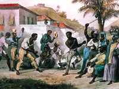
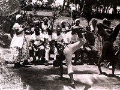

Origines de la capoeira
Les origines de la Capoeira et l'esclavage au Brésil sont indissociables. Entre le XVIe et le XIXe siècle plus de deux millions de noirs furent amenés d'Afrique et plus particulièrement d'Angole, du Zaïre ou de Mozambique par les Portugais pour devenir esclaves dans les mines et les plantations de cannes à sucre du Brésil alors colonie portugaise.
Obligés de parler dans la langue des colons, interdits de pratiquer leurs cultes et leurs rites et toute autre forme d'alliance, la Capoeira fût un moyen de se rebeller et de s'entraîner à l'insu de leurs maîtres. Le nom de Capoeira est issu de mot portugais Capoeira désignant une végétation, une repousse d'herbes où les esclaves évadés se cachaient lorsqu'ils étaient poursuivis par leur maître. Cet art puise ces racines dans des méthodes de combats de ces peuples africains telles que le Moringue ou encore la danse du zèbre. Pratiquée après les horaires de travail, la musique, les chants en portugais et les mouvements plus dansés servaient à faire croire que ce n'était qu'une danse et non un art de combat.
De la répression ...
Dès le début de son histoire et ce même après l'abolition de l'esclavage, la Capoeira est restée longtemps interdite. Tout d'abord par les propriétaires des plantations qui ont remarqué que cette "danse" permettait aux esclaves de s'unir mais surtout formait des lutteurs forts, agiles et donc dangereux. Ensuite, après l'abolition de l'esclavage (en 1888), des gangs appelés "maltas" se formèrent et utilisèrent la Capoeira afin de s'affronter, de répandre la violence ou encore pour se vendre à de riches seigneurs comme mercenaire. A cette Capoeira a souvent été ajouté des armes blanches. Certaines de ces maltas furent même impliquées politiquement. Ceci eut pour conséquence la mauvaise réputation de la Capoeira et la publication en 1887 d'une loi interdisant la Capoeira. C'est à cette époque que la musique et les chants ont pris de l'importance.
A la légitimité.
Dans les années 1930, une nouvelle proposition de loi est publiée tolérant la pratique de la Capoeira en milieu fermé. C'est à ce moment que s'élèvent deux grands nom de la Capoeira : Mestre Bimba et Mestre Pastinha.
Mestre Bimba (Manoel do Reis Machado), père de la Capoeira régionale, ouvre la première académie de Capoeira sous le nom de "association de lutte régionale de Bahia". Cette lutte, aussi appelée Capoeira Régional, intègre des coups du Batuque mais aussi d'art martiaux étrangers tels que le ju-jitsu ou le judo.
Peu de temps après, en 1941, Mestre Pastinha (Vincente Ferreira Pastinha) ouvre quant à lui une académie développant la Capoeira Angola, style proche du jeu pratiqué par les esclaves.
Depuis lors, la Capoeira est reconnue comme le seul sport national du Brésil et se répand dans ce pays mais aussi au États-Unis, en Europe, au Japon et depuis quelques années partout dans le monde. Elle n'est plus considérée seulement comme une curiosité exotique, mais comme un véritable sport, une manière de vivre, accessible ` tous ceux qui voudront bien s'ouvrir à une culture différente. Elle est une importante arme contre la violence sous toutes ses formes.

